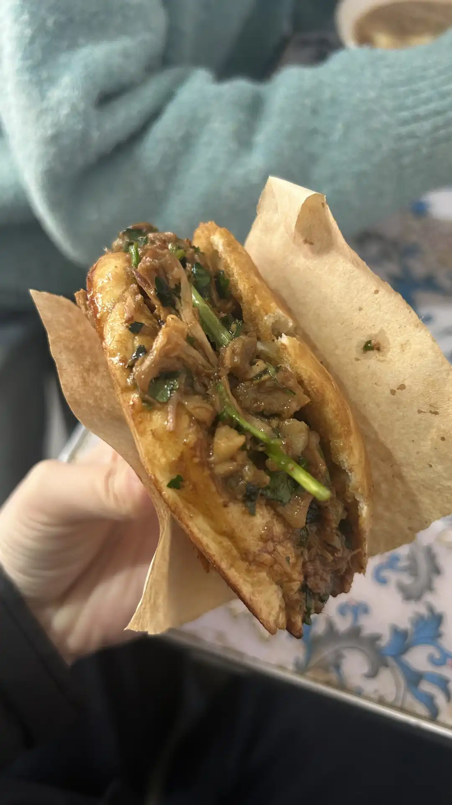
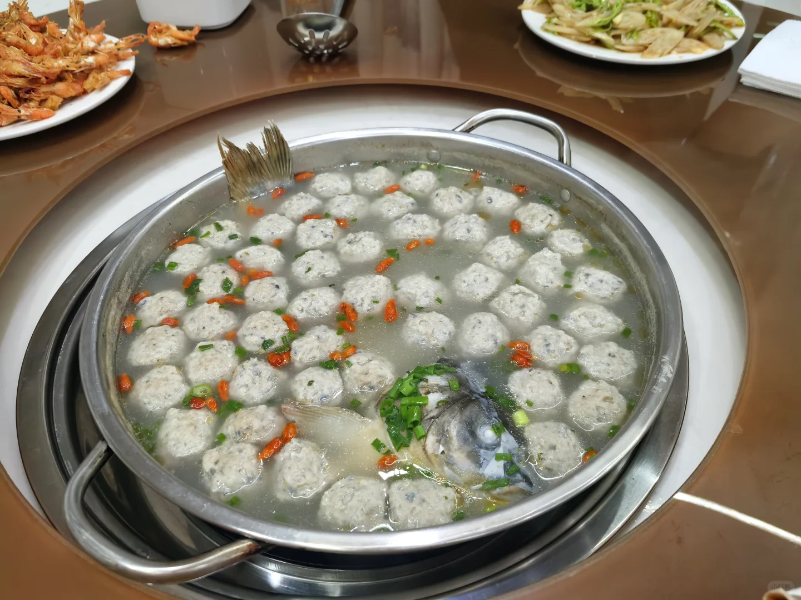
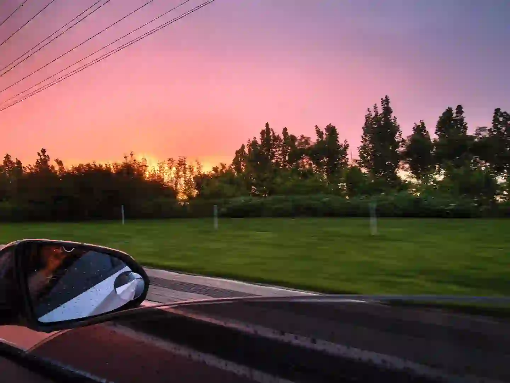
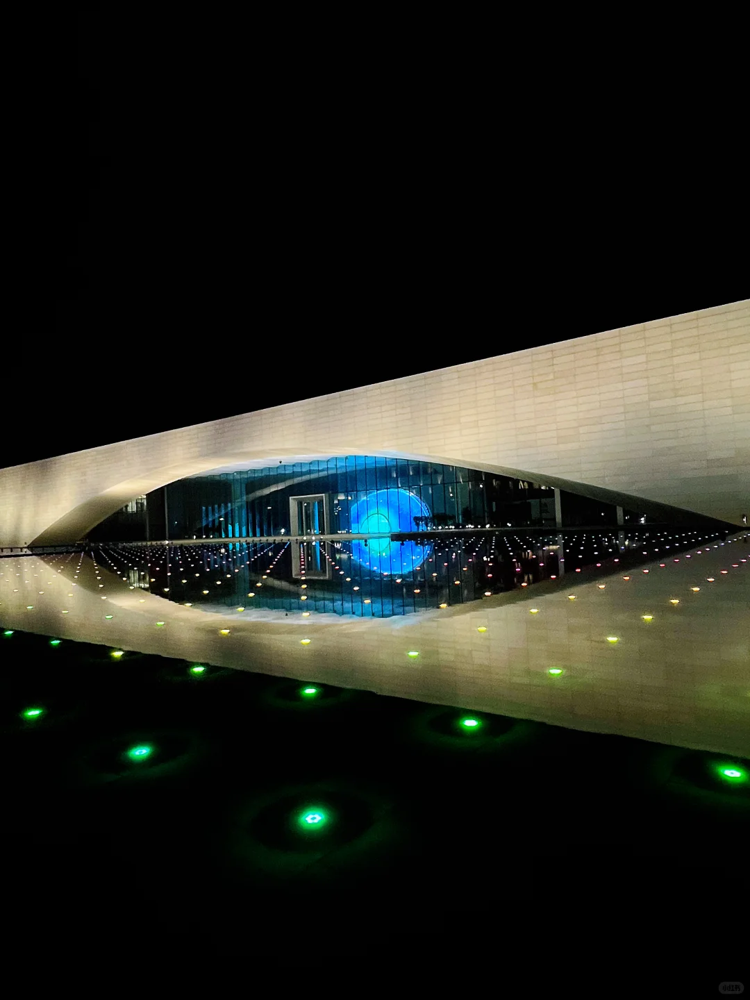
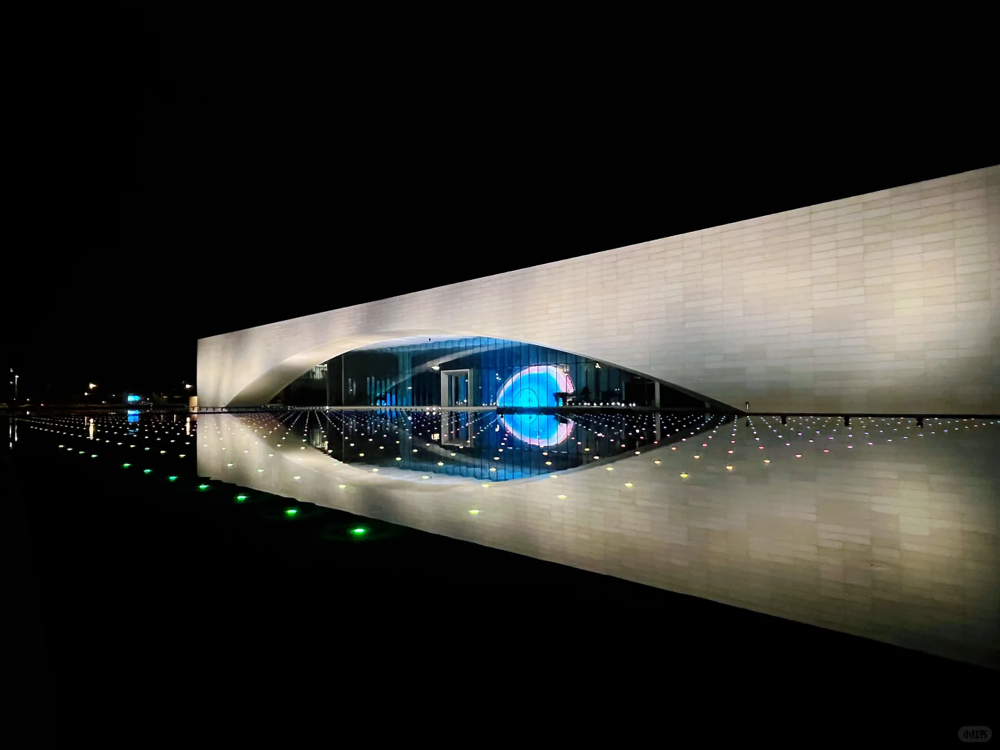

📋 行程概览
🚗 出发
望都家园 08:00
🏠 返回
望都家园 18:00
📏 单程距离
约 160km
💰 人均预算
约 ¥380
🗺️ 路线地图
📅 行程时间线
08:00
🚗 望都家园出发
从昌平北七家望都家园出发，经京雄高速/京港澳高速前往雄安新区，全程约1.5-2小时
09:30 - 10:00
🛣️ 到达雄安新区
驶入雄安新区，感受这座"未来之城"的宽阔道路与崭新面貌。沿途可远眺容东片区建筑群
10:00 - 11:30
🏞️ 白洋淀 · 燕南堤
游览白洋淀燕南堤景区——"华北明珠"的核心景观带。漫步芦苇荡栈道，欣赏水天一色的湿地风光。这里是雄安新区生态修复的示范区，视野开阔，风景宜人。


11:30 - 12:30
🍜 雄安午餐
在雄安新区容东片区品尝当地特色美食。雄安汇集白洋淀河鲜、炖鱼、芦苇叶包等地方风味




13:00 - 14:00
🏛️ 雄安印象展览馆
参观位于容东金湖东路76号的雄安印象展览馆。通过AR、裸眼3D、多媒体沙盘等沉浸式体验，了解雄安新区从蓝图到实景的"千年大计"


14:30 - 15:00
👁️ 雄安之眼
打卡雄安新区地标——"雄安之眼"，位于容东片区，建筑造型独特，寓意雄安放眼世界、面向未来。是新区最热门的拍照打卡点之一





15:30
🛣️ 开始返程
从雄安新区出发，经京雄高速/京港澳高速返回北京
18:00
🏠 到达望都家园
结束愉快的雄安一日游，安全到家
🌟 必玩景点
白洋淀 · 燕南堤
华北明珠核心景观带，漫步芦苇栈道，欣赏水天一色的湿地风光。雄安新区生态修复的典范之作
雄安印象展览馆
AR/裸眼3D沉浸式展览，了解千年大计的宏伟蓝图。需在公众号提前预约
雄安之眼
雄安地标建筑，独特造型寓意深远，是新区最热门的拍照打卡点
🍴 雄安味道
白洋淀炖鱼
招牌推荐
白洋淀周边农家乐 / 容东片区餐饮
芦苇叶包
地方特色
白洋淀特色小吃，清新爽口
雄安河鲜
鲜活水产
白洋淀直供，清蒸/红烧皆宜
💰 费用预算
| 项目 | 明细 | 费用 |
|---|---|---|
| 油费 | 往返约340km，按0.7元/km | ≈ ¥170 |
| 高速费 | 京雄高速往返 | ≈ ¥100 |
| 白洋淀景区 | 燕南堤免费开放 | 🆓 免费 |
| 雄安印象 | 展览馆（需公众号预约） | 🆓 免费 |
| 停车费 | 景区停车场 | ≈ ¥30 |
| 餐饮 | 午餐（白洋淀炖鱼） | ≈ ¥80 |
| 合计 | 单人一日游 | ≈ ¥380 |
💡 出行贴士
- 1 早出发不堵：周日早上8点出发，六环和京雄高速都很通畅，10点左右到白洋淀。
- 2 公众号预约：雄安印象展览馆需提前1-2天在"雄安印象"公众号预约参观。
- 3 防晒防蚊：5月水边蚊虫较多，建议携带驱蚊液；白洋淀遮阴少，注意防晒。
- 4 舒适着装：芦苇栈道和展览馆建议穿运动鞋或平底鞋。
- 5 加油提醒：出发前在望都家园附近加满油，雄安沿线加油站较少。